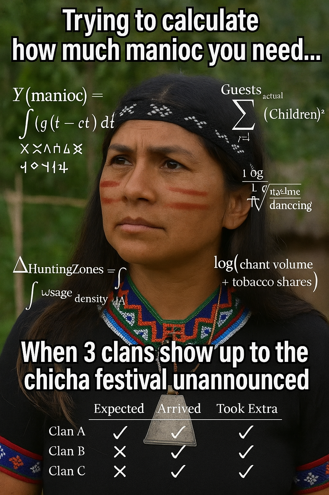
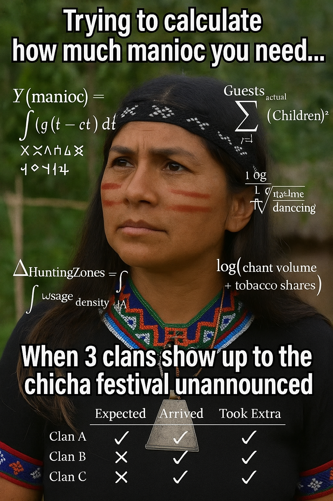
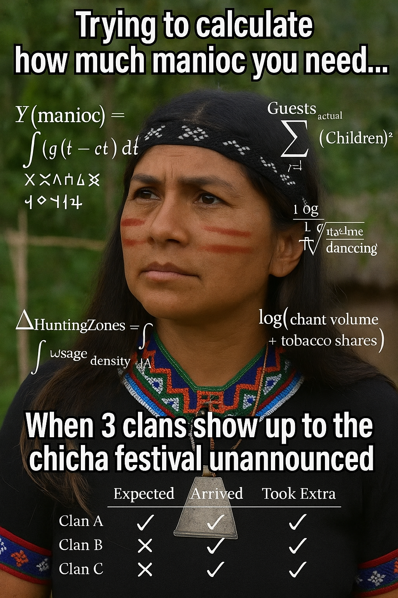

This series explores the intersection of digital culture, identity, and humor through the reimagination of the viral "Nazaré Tedesco Confused Math" meme. Each image is generated as a fusion of cognitive dissonance and national archetypes, depicting individuals from various countries caught in moments of abstract contemplation, overwhelmed by floating mathematical equations. The emotional core—confusion, tension, and internal calculation—is maintained across all variations, while the visual context shifts to reflect culturally specific aesthetics.
Using generative AI tools, each image was created through prompt engineering that combined emotional tone, regional identifiers, and symbolic imagery. For instance, a Brazilian woman mid-samba, a North Korean soldier, or a Portuguese woman in traditional attire—all presented with puzzled expressions and surrounded by algebraic symbols—serve to universalize the feeling of mental overload in culturally distinctive frames. The prompt construction process was highly iterative, ensuring each output balanced recognizability, stylistic fidelity, and expressive clarity.
Captions such as “WHEN THE MATH DON’T SAMBA” or “WHEN THE MATH DON’T FADO” were added to anchor the images within a meme logic that juxtaposes abstract reasoning with everyday cultural identity. These works were created not only to amuse but to question how we perceive intelligence, confusion, and identity in a globalized, algorithmically mediated visual culture.
In addition, the resulting visuals often fall into caricature or cultural generalization that does not always reflect reality and can sometimes verge on prejudice—most notably in the persistent association of samba with the hypersexualized Black woman, which became a point of concern in our final analysisss.
